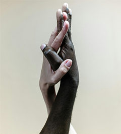
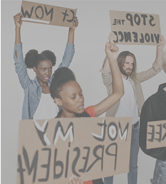
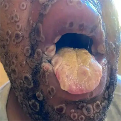

Sobre Nós
Nossa Esseência: Entre Mentes, Realidades E Mundo Digitais, Dentro do
Nota+
Navegamos entre a racionalidade da Ciência e a sensibilidade da alma humana. Não somos psicólogos
ou bioanalista - Somos um tradutor de complexidades. Enquanto uns veem números, sintomas ou códigos,
nós vemos histórias, contextos e conexões.
Nota+ Conta com profissionais formados em Psicologia Clínica, e Ciências Laboratoriais,
Nota+ é um webSite que também mergulha a cabeça no mundo da
tecnologia e desenvolvimento web, porque acreditamos que a saúde e a educação do futuro são digitais, acessíveis
e integradas.
Nossa Visão Sobre Educação: Educar é Libertar, Criar é Cuidar
Nota+, Tem o compromisso não apenas de formar pessoas,
mas moldar mentes críticas através dos nossos recursos gratuitos. Ensinar diferentes tipos de Calculos,
Microbilogia, Patologia ou Hematologia vai além do contéudo - é sobre inspirar responsabilidade,
Ética e amor pela ciência.
Nós acreditamos, que a Educação é combustível da mudança social. E é por isso que aqui você encontra também
contéudos voltados a formação contínua, com ebooks, calculadoras, reflexões académicas
e materiais gratuítos. Porque conhecimento bom é o que circula.
Nossa Visão Sobre Tecnologia Com Propósito
Programar sem propósito é só código vazio. Por isso disenvolvemos soluções digitais focadas em
saúde, autoconhecimento e inclusão. Apps, sites, sistemas e ferramentas que não
são só funcionais - são éticas, humanas e necessárias. Sim a tecnologia também pode ser forma de cuidado
Nossa Visão sobre Área de Psicologia Como Ponto de Parida
A clínica é um espaço sagrado de escuta e reconstrução. Cada paciente, cada história, reforça nossa
certeza: Todo sinal e sintoma é uma linguagem e todo sofrimento merece tradução,
não julgamento.
Por que Existimos?
Este site nasceu para reunir tudo que acreditamos, produzimos e praticamos.
Um centro de ideias e soluções onde:
- ✓ Ciência é descomplicada;
- ✓ Psicologia é acessível;
- ✓ Tecnologia é ferramenta de inclusão;
- ✓ Educação é acto político.
Se você é curioso, estudante, paciente, cliente ou apenas alguém buscando evolução pessoal e profissional -
Você está no lugar certo
Feridas Estruturais: Como o Racismo Molda a Violência e Paralisa a Política Pública
Racismo Estrutural E Seus impactos Sociais
Um olhar cirúrgico sobre os mecanismos que sustentam a exclusão em Angola
O racismo estrutural em Angola não é apenas um legado colonial - é um sistema ainda ativo
que influncia o acesso à educação, emprego e representação. Diariamente, muitos angolanos
vivem o peso de serem julgado pela cor antes mesmo de serem ouvidos.
Esse racismo silencioso exclui, invisibilizam e adoence. Combatê-lo exige
acções concretas: políticas públicas, educação antirracista e uma sociedade disposta
a quebrar o ciclo. É hora de olhar de frente e mudar Ler mais

Violência Social em Angola
A violência social não grita apenas com alma, ela sussurra nas esquinas do desemprego
A violência social em Angola vai além das agressões físicas — ela mora no desemprego,
na fome, na exclusão e na humilhação diária que muitos enfrentam. É quando um jovem é
ignorado por sua origem ou quando uma mãe chora porque não tem pão pra dar. Violência
social é silenciosa, mas fere fundo. Denunciar não basta. É preciso reconhecer, agir e
reconstruir relações mais justas, onde dignidade não seja privilégio, mas direito de
todos. Ler mais

O Que Ninguém Te Explica
Ninguém te explica que crescer dói em silêncio. Que escolhas pesam. Que às vezes a vida
não tem respostas prontas, e tudo que resta é seguir com fé e dúvida. Ninguém ensina a
lidar com perdas, frustrações ou a pressão de ser forte o tempo todo. Este espaço é pra
falar disso — das verdades não ditas, dos aprendizados solitários e do que só a vivência
revela. Porque a vida real é bem diferente dos conselhos prontos. Ler mais
Doenças Negligneciadas Em Àfrica
As doenças negligenciadas em África continuam a afetar milhões, invisíveis aos olhos do mundo.
Malária, esquistossomose, filariose e outras tantas ceifam vidas em silêncio, onde falta
saneamento, educação e acesso à saúde básica. Este blog denuncia essa realidade crua,
refletindo o grito abafado de comunidades esquecidas. Aqui falamos com voz própria, de
quem vê o sofrimento de perto e clama por justiça sanitária. É tempo de dar rosto, nome
e dignidade a quem convive com o abandono médico todos os dias. Ler mais

Produção De Opiniões nas Redes Social
Como é encarada a volta do mundo sobre produzir opiniões em redes sociais?
Nas redes sociais, todo mundo tem voz — mas nem toda opinião é livre de algoritmos, bolhas
e manipulação. Ao redor do mundo, o ato de opinar virou palco de guerra ideológica, vaidade
e desinformação. Produzir opinião virou performance. Neste blog, refletimos com honestidade
sobre como as redes moldam o que pensamos, sentimos e até silenciamos. A experiência humana
online é intensa, contraditória e muitas vezes solitária. Pensar antes de publicar virou um
ato de resistência. E autenticidade, um desafio diário... Ler mais